Change analysis for Hungary for PRIMAP-hist v2.6.1_final compared to
v2.6_final
Overview over
emissions by sector and gas
The following figures show the aggregate national total emissions
excluding LULUCF AR6GWP100 for the country reported priority scenario.
The dotted linesshow the v2.6_final data.
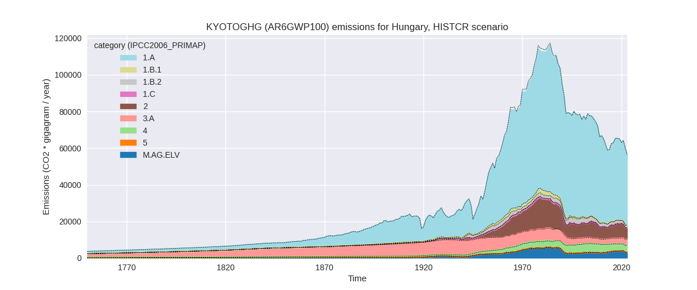
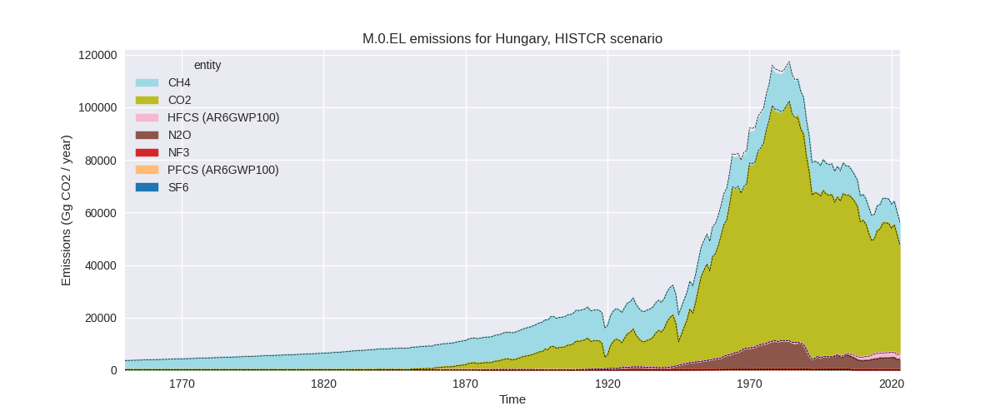
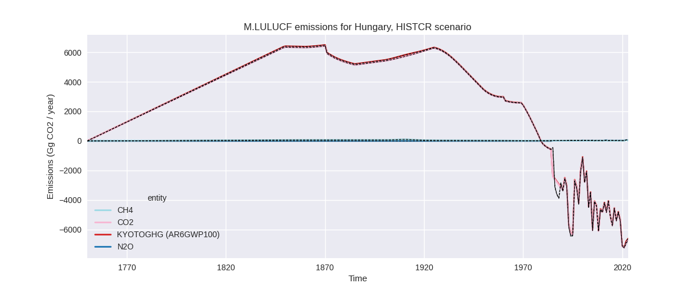
The following figures show the aggregate national total emissions
excluding LULUCF AR6GWP100 for the third party priority scenario. The
dotted linesshow the v2.6_final data.
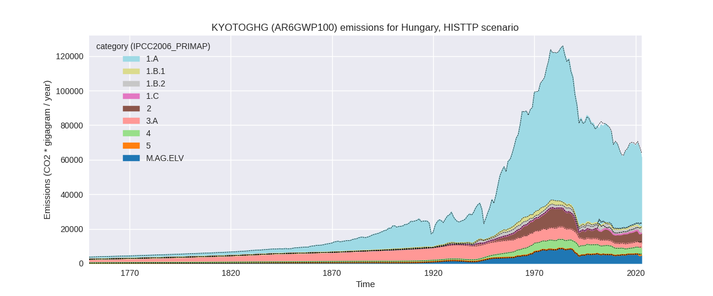
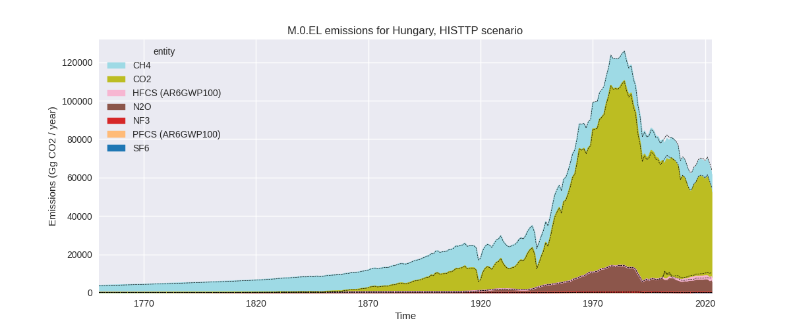
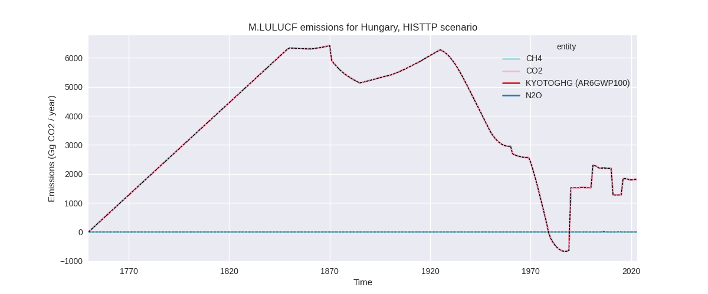
Overview over changes
In the country reported priority scenario we have the following
changes for aggregate Kyoto GHG and national total emissions excluding
LULUCF (M.0.EL):
- Emissions in 2023 have changed by -0.4%% (-204.53 Gg CO2 / year)
- Emissions in 1990-2023 have changed by 0.0%% (10.17 Gg CO2 / year)
In the third party priority scenario we have the following changes
for aggregate Kyoto GHG and national total emissions excluding LULUCF
(M.0.EL):
- Emissions in 2023 have changed by -3.6%% (-2315.43 Gg CO2 / year)
- Emissions in 1990-2023 have changed by -0.8%% (-629.00 Gg CO2 / year)
Most
important changes per scenario and time frame
In the country reported priority scenario the
following sector-gas combinations have the highest absolute impact on
national total KyotoGHG (AR6GWP100) emissions in 2023
(top 5):
- 1: 2, CO2 with -366.77 Gg CO2 / year (-9.6%)
- 2: 4, CH4 with 124.19 Gg CO2 / year (3.4%)
- 3: 1.B.2, CH4 with 77.29 Gg CO2 / year (6.3%)
- 4: M.AG.ELV, N2O with 74.29 Gg CO2 / year (2.5%)
- 5: 3.A, CH4 with -58.82 Gg CO2 / year (-1.9%)
In the country reported priority scenario the
following sector-gas combinations have the highest absolute impact on
national total KyotoGHG (AR6GWP100) emissions in
1990-2023 (top 5):
- 1: 2, HFCS (AR6GWP100) with 13.09 Gg CO2 / year (1.2%)
- 2: 2, CO2 with -10.79 Gg CO2 / year (-0.2%)
- 3: 1.B.2, CH4 with 3.76 Gg CO2 / year (0.2%)
- 4: 4, CH4 with 3.65 Gg CO2 / year (0.1%)
- 5: 2, PFCS (AR6GWP100) with 3.49 Gg CO2 / year (2.9%)
In the third party priority scenario the following
sector-gas combinations have the highest absolute impact on national
total KyotoGHG (AR6GWP100) emissions in 2023 (top
5):
- 1: 2, N2O with -1423.83 Gg CO2 / year (-85.7%)
- 2: 1.B.1, CO2 with 1066.14 Gg CO2 / year (408.0%)
- 3: 2, CO2 with -905.69 Gg CO2 / year (-23.1%)
- 4: M.AG.ELV, N2O with -515.88 Gg CO2 / year (-10.2%)
- 5: 2, HFCS (AR6GWP100) with -325.16 Gg CO2 / year (-12.4%)
In the third party priority scenario the following
sector-gas combinations have the highest absolute impact on national
total KyotoGHG (AR6GWP100) emissions in 1990-2023 (top
5):
- 1: 2, N2O with -995.55 Gg CO2 / year (-51.5%)
- 2: 1.B.2, CO2 with 575.46 Gg CO2 / year (394.0%)
- 3: 1.B.2, CH4 with -116.47 Gg CO2 / year (-5.9%)
- 4: 1.B.1, CO2 with 54.04 Gg CO2 / year (12.0%)
- 5: 2, SF6 with 48.34 Gg CO2 / year (54.5%)
Notes on data changes
Here we list notes explaining important emissions changes for the
country.
- CRT data has been included but replaces official data reported to
the EU which does not show larger differences. Changes in the CR
time-series are small and come from updated third party data (EDGAR,
FAO) which is used to extrapolate the country reported data.
- In the TP time-series we have some changes form EDGAR and FAO data.
- N2O in 2.B is much lower in EDGAR post-2001. CO2 is much lower for
2022 and 2023
- CO2 in 1.B.1 is much higher for 2022 and 2023 in the new EDGAR data
than in the old data.
- N2O in M.AG.ELV is much lower for 2022 and 2023 which comes from a
significant drop of emissions related to synthetic fertilizers for 2022
in the new FAOSTAT data
- HFC emissions are lower post-2016 in the new EDGAR data.
Changes by sector and gas
For each scenario and time frame the changes are displayed for all
individual sectors and all individual gases. In the sector plot we use
aggregate Kyoto GHGs in AR6GWP100. In the gas plot we usenational total
emissions without LULUCF.
country reported scenario
2023
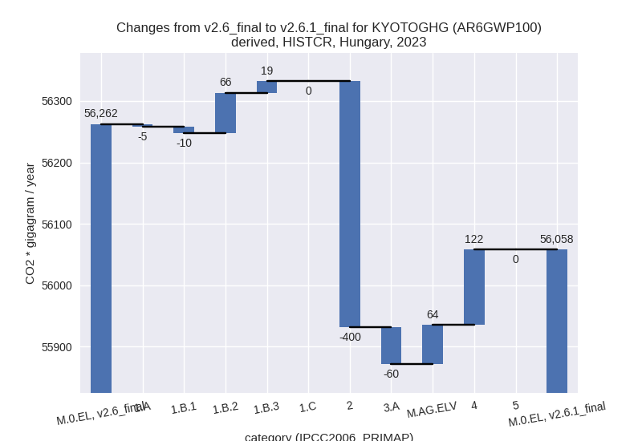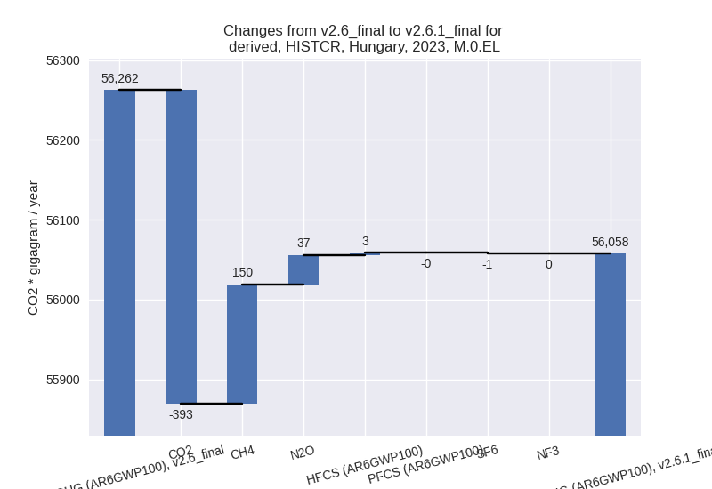
1990-2023
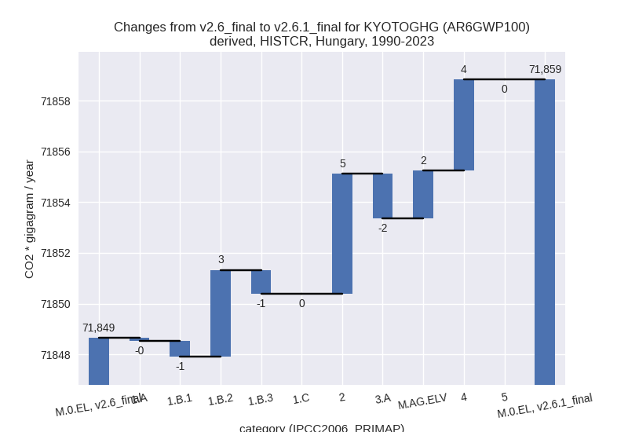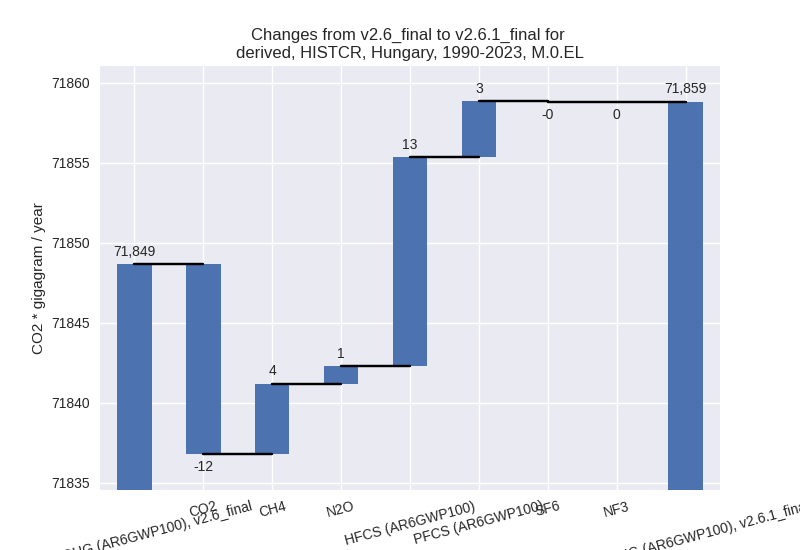
third party scenario
2023
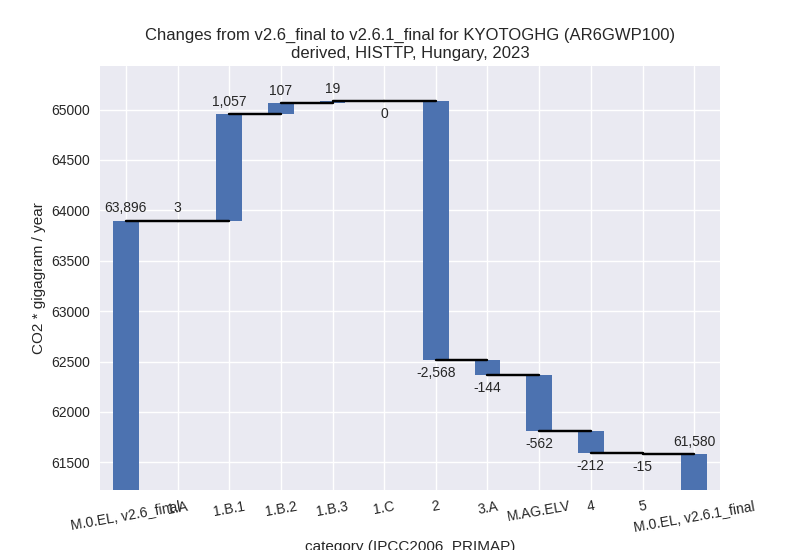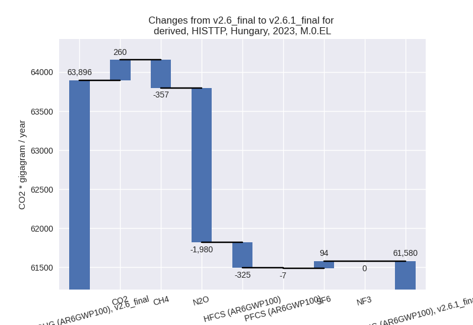
1990-2023
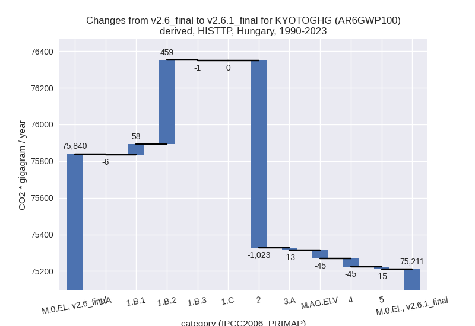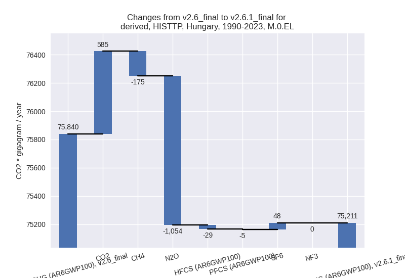
Detailed changes for the
scenarios:
country reported scenario
(HISTCR):
Most important changes
per time frame
For 2023 the following sector-gas combinations have
the highest absolute impact on national total KyotoGHG (AR6GWP100)
emissions in 2023 (top 5):
- 1: 2, CO2 with -366.77 Gg CO2 / year (-9.6%)
- 2: 4, CH4 with 124.19 Gg CO2 / year (3.4%)
- 3: 1.B.2, CH4 with 77.29 Gg CO2 / year (6.3%)
- 4: M.AG.ELV, N2O with 74.29 Gg CO2 / year (2.5%)
- 5: 3.A, CH4 with -58.82 Gg CO2 / year (-1.9%)
For 1990-2023 the following sector-gas combinations
have the highest absolute impact on national total KyotoGHG (AR6GWP100)
emissions in 1990-2023 (top 5):
- 1: 2, HFCS (AR6GWP100) with 13.09 Gg CO2 / year (1.2%)
- 2: 2, CO2 with -10.79 Gg CO2 / year (-0.2%)
- 3: 1.B.2, CH4 with 3.76 Gg CO2 / year (0.2%)
- 4: 4, CH4 with 3.65 Gg CO2 / year (0.1%)
- 5: 2, PFCS (AR6GWP100) with 3.49 Gg CO2 / year (2.9%)
Changes in the main sectors for aggregate KyotoGHG (AR6GWP100)
are
- 1: Total sectoral emissions in 2022 are 43573.92 Gg
CO2 / year which is 72.7% of M.0.EL emissions. 2023 Emissions have
changed by 0.2% (69.70 Gg CO2 /
year). 1990-2023 Emissions have changed by 0.0% (1.74 Gg CO2 / year).
- 2: Total sectoral emissions in 2022 are 6261.19 Gg
CO2 / year which is 10.4% of M.0.EL emissions. 2023 Emissions have
changed by -6.3% (-400.18 Gg CO2 /
year). 1990-2023 Emissions have changed by 0.1% (4.73 Gg CO2 / year). For 2023 the
changes per gas
are:
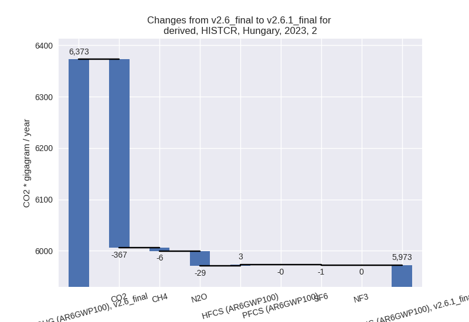
- M.AG: Total sectoral emissions in 2022 are 6292.43
Gg CO2 / year which is 10.5% of M.0.EL emissions. 2023 Emissions have
changed by 0.1% (3.82 Gg CO2 /
year). 1990-2023 Emissions have changed by 0.0% (0.11 Gg CO2 / year).
- 4: Total sectoral emissions in 2022 are 3813.49 Gg
CO2 / year which is 6.4% of M.0.EL emissions. 2023 Emissions have
changed by 3.2% (122.13 Gg CO2 /
year). 1990-2023 Emissions have changed by 0.1% (3.59 Gg CO2 / year). For 2023 the
changes per gas
are:
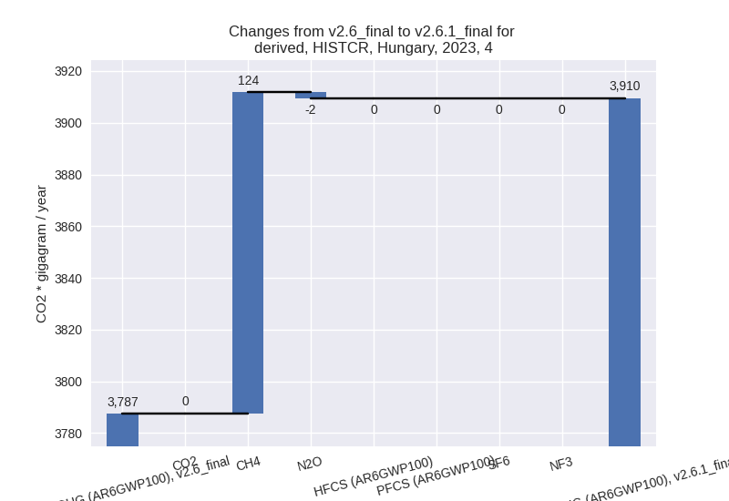
- 5: No data
third party scenario (HISTTP):
Most important changes
per time frame
For 2023 the following sector-gas combinations have
the highest absolute impact on national total KyotoGHG (AR6GWP100)
emissions in 2023 (top 5):
- 1: 2, N2O with -1423.83 Gg CO2 / year (-85.7%)
- 2: 1.B.1, CO2 with 1066.14 Gg CO2 / year (408.0%)
- 3: 2, CO2 with -905.69 Gg CO2 / year (-23.1%)
- 4: M.AG.ELV, N2O with -515.88 Gg CO2 / year (-10.2%)
- 5: 2, HFCS (AR6GWP100) with -325.16 Gg CO2 / year (-12.4%)
For 1990-2023 the following sector-gas combinations
have the highest absolute impact on national total KyotoGHG (AR6GWP100)
emissions in 1990-2023 (top 5):
- 1: 2, N2O with -995.55 Gg CO2 / year (-51.5%)
- 2: 1.B.2, CO2 with 575.46 Gg CO2 / year (394.0%)
- 3: 1.B.2, CH4 with -116.47 Gg CO2 / year (-5.9%)
- 4: 1.B.1, CO2 with 54.04 Gg CO2 / year (12.0%)
- 5: 2, SF6 with 48.34 Gg CO2 / year (54.5%)
Changes in the main sectors for aggregate KyotoGHG (AR6GWP100)
are
- 1: Total sectoral emissions in 2022 are 48022.52 Gg
CO2 / year which is 73.6% of M.0.EL emissions. 2023 Emissions have
changed by 2.8% (1185.94 Gg CO2 /
year). 1990-2023 Emissions have changed by 0.9% (510.66 Gg CO2 / year). For 2023 the
changes per gas
are:
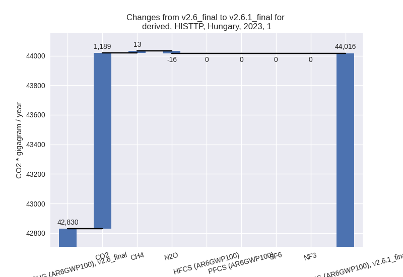
The changes come from the following subsectors:
- 1.A: Total sectoral emissions in 2022 are 44263.27
Gg CO2 / year which is 92.3% of category 1 emissions. 2023 Emissions
have changed by 0.0% (2.85 Gg CO2 /
year). 1990-2023 Emissions have changed by -0.0% (-5.74 Gg CO2 / year).
- 1.B.1: Total sectoral emissions in 2022 are 1156.96
Gg CO2 / year which is 2.4% of category 1 emissions. 2023 Emissions have
changed by 318.7% (1057.21 Gg CO2 /
year). 1990-2023 Emissions have changed by 8.6% (58.32 Gg CO2 / year). For 2023 the
changes per gas
are:
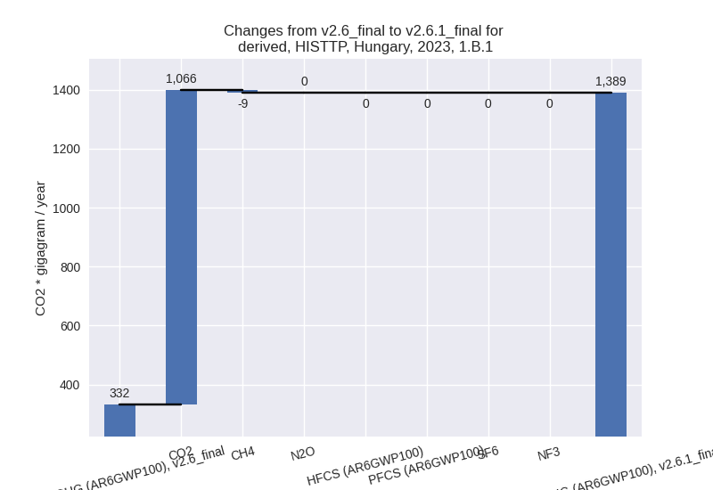
For 1990-2023 the changes per gas
are:
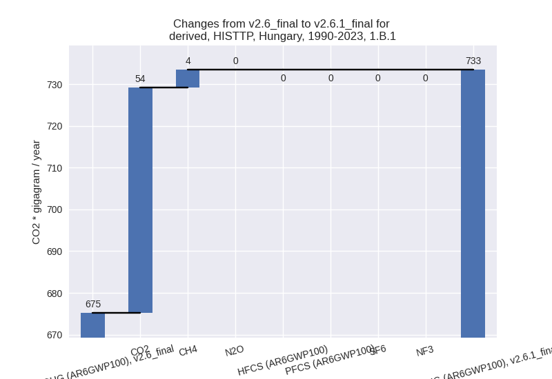
There is no subsector information available in PRIMAP-hist.
- 1.B.2: Total sectoral emissions in 2022 are 2525.76
Gg CO2 / year which is 5.3% of category 1 emissions. 2023 Emissions have
changed by 4.6% (107.32 Gg CO2 /
year). 1990-2023 Emissions have changed by 21.6% (459.01 Gg CO2 / year). For 2023 the
changes per gas
are:
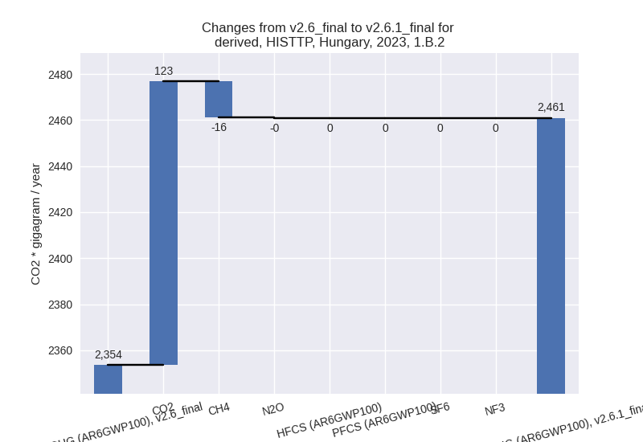
For 1990-2023 the changes per gas
are:
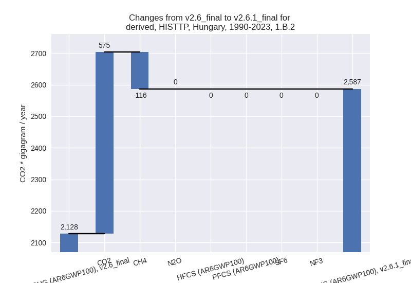
There is no subsector information available in PRIMAP-hist.
- 2: Total sectoral emissions in 2022 are 5900.73 Gg
CO2 / year which is 9.0% of M.0.EL emissions. 2023 Emissions have
changed by -30.8% (-2568.45 Gg CO2 /
year). 1990-2023 Emissions have changed by -15.4% (-1022.70 Gg CO2 / year). For 2023
the changes per gas
are:
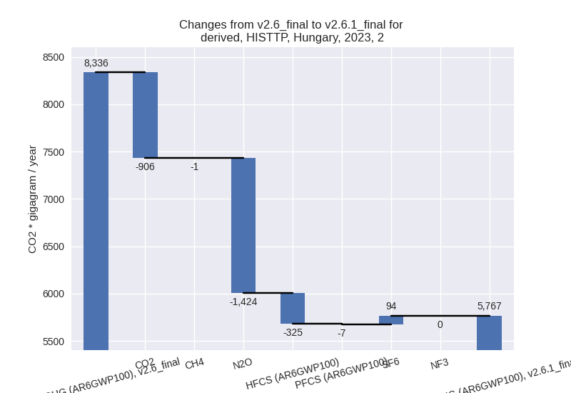
For 1990-2023 the changes per gas
are:
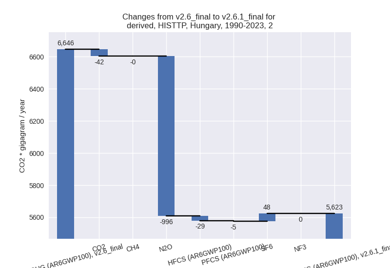
- M.AG: Total sectoral emissions in 2022 are 7308.92
Gg CO2 / year which is 11.2% of M.0.EL emissions. 2023 Emissions have
changed by -8.4% (-705.51 Gg CO2 /
year). 1990-2023 Emissions have changed by -0.7% (-57.08 Gg CO2 / year). For 2023 the
changes per gas
are:
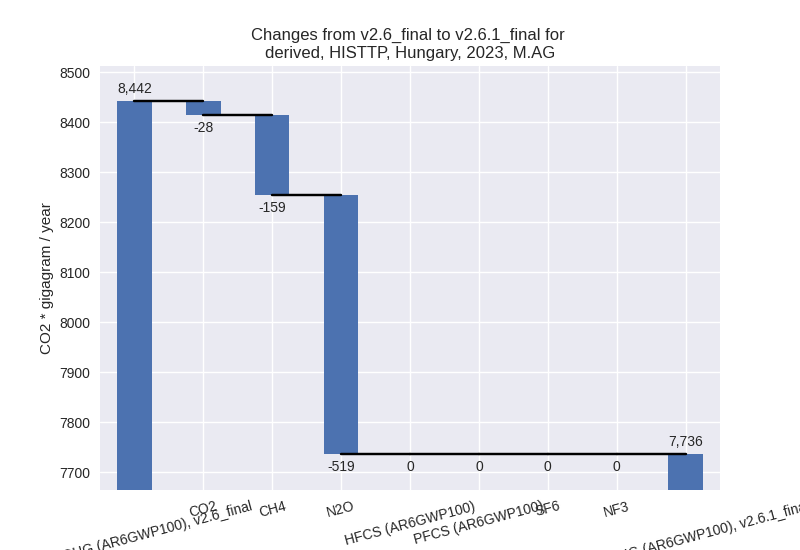
The changes come from the following subsectors:
- 3.A: Total sectoral emissions in 2022 are 2932.89
Gg CO2 / year which is 40.1% of category M.AG emissions. 2023 Emissions
have changed by -4.7% (-143.85 Gg
CO2 / year). 1990-2023 Emissions have changed by -0.4% (-12.57 Gg CO2 / year). For 2023 the
changes per gas
are:
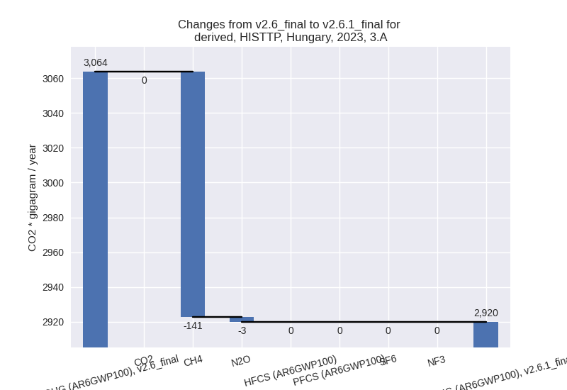
There is no subsector information available in PRIMAP-hist.
- M.AG.ELV: Total sectoral emissions in 2022 are
4376.03 Gg CO2 / year which is 59.9% of category M.AG emissions. 2023
Emissions have changed by -10.4%
(-561.67 Gg CO2 / year). 1990-2023 Emissions have changed by -0.9% (-44.50 Gg CO2 / year). For 2023 the
changes per gas
are:
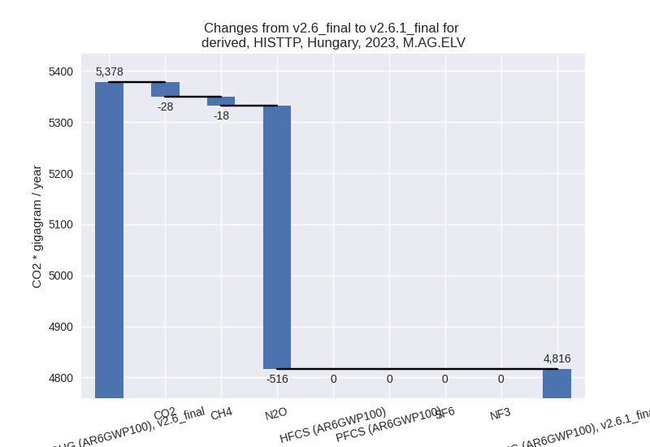
There is no subsector information available in PRIMAP-hist.
- 4: Total sectoral emissions in 2022 are 3843.46 Gg
CO2 / year which is 5.9% of M.0.EL emissions. 2023 Emissions have
changed by -5.1% (-212.45 Gg CO2 /
year). 1990-2023 Emissions have changed by -1.0% (-45.25 Gg CO2 / year). For 2023 the
changes per gas
are:
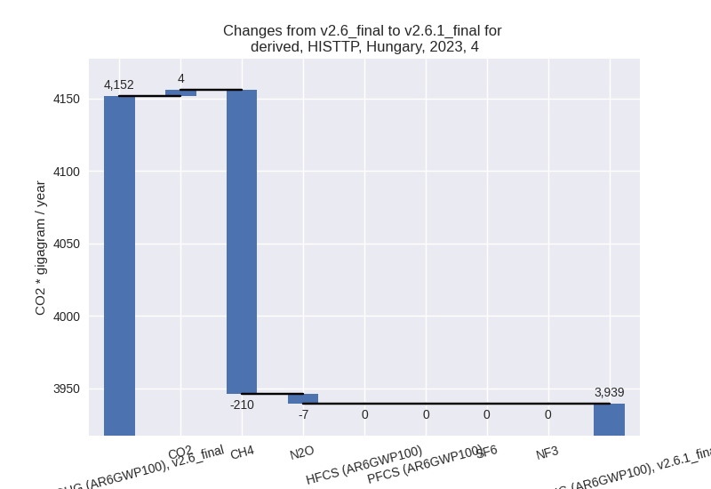
- 5: Total sectoral emissions in 2022 are 133.17 Gg
CO2 / year which is 0.2% of M.0.EL emissions. 2023 Emissions have
changed by -10.9% (-14.97 Gg CO2 /
year). 1990-2023 Emissions have changed by -7.2% (-14.63 Gg CO2 / year). For 2023 the
changes per gas
are:
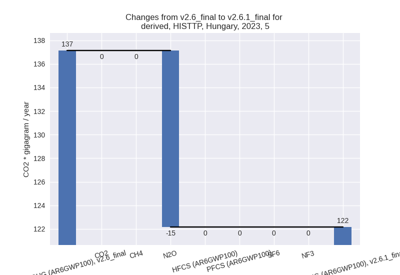
For 1990-2023 the changes per gas
are: